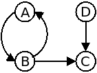

Para efeitos da nota atribuida à resolução de exercícios ao longo do semestre - Submeter até 23:59 de 20 de Dezembro
(o problema continuará depois disponível para submissão, mas sem contar para a nota)
Uma companhia áerea tem vários voos. O seu departamento de Marketing resolveu criar uma página na internet indicando que cidades estão ligadas por voos da companhia.
A tua tarefa é ajudá-los, fazendo um programa que descubra que cidades estão ligadas por voos, quer directamente, quer indirectamente, através de outros voos, passando por cidades intermédias.
A primeira linha contém um único inteiro N, o número de cidades a considerar. Cada cidade é representada por uma letra maiúscula, começando a partir do A. Por exemplo, se tivermos 4 cidades, serão representadas por A, B, C e D.
Seguem-se N linhas, cada uma indicando os voos directos entre a cidade correspondente e outras cidades, no formato: cidade-origem num_destinos destino_1 destino_2 ... destino_m.
Existe uma linha para cada cidade (mesmo que não tenha voos) e as cidades-origem vêm sempre por ordem alfabética. Nota que o facto de existir um voo de A para B não significa que exista um voo de B para A.
Deve ser imprimida uma matriz, de N por N, indicando todas as cidades que estão ligadas, no formato:
A B C ... A 1 0 0 ... B 1 1 1 ... C 0 0 1 ... . . . . ... . . . . ... . . . . ...
0 (zero) significa que não existe maneira de chegar de uma cidade a outra e 1 (um) precisamente o contrário, ou seja, que existe maneira (directa ou indirecta) de o fazer.
Podes assumir que na diagonal principal vêm sempre uns, ou seja, é sempre possível viajar de uma cidade para ela própria (basta não sair do sitio...)
Nota que não devem existir espaços a mais no final de cada linha do input (existe um único espaço a separar cada letra ou número, excepto no caso da primeira linha, onde o A é precedido de dois espaços, de modo a que a tabela fique alinhada).
São garantidos os seguintes limites em todos os casos de teste que irão ser colocados ao programa:
| 2 ≤ N ≤ 26 | Número de cidades |
4 A 1 B B 2 A C C 0 D 1 C
A B C D A 1 1 1 0 B 1 1 1 0 C 0 0 1 0 D 0 0 1 1
O exemplo de input corresponde ao seguinte grafo:

Desenho e Análise de Algoritmos (CC2001)
DCC/FCUP - Faculdade de Ciências da Universidade do Porto